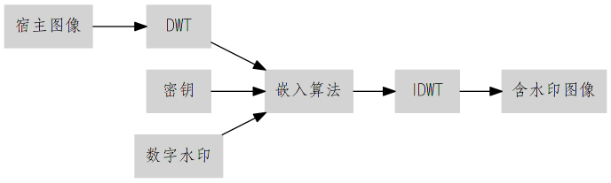
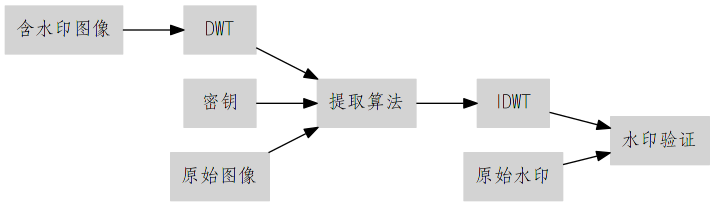

1 今日计划
- 完成小波变化的论文阅读和理解
- 完成论文的降重和格式修改
- 完成盲源分离的论文阅读和理解
2 今日收获
- 滤波
滤波分为空间滤波，频率滤波，线性空间滤波。 空间滤波是 “频率滤波”是指接受（通过）或拒绝一定的频率分量。例如通过低频的滤波器称为低通滤波器 。低通滤波器的最终效果是模糊（平滑）一幅图像。
小波变换的基础
小波分析(wavelet analysis) 或小波变换(wavelet transform) 是用 有限长或快速衰减的，称为母小波(mother wavelet)的震荡波形来表示信号。该波形被缩放 和平移以匹配输入信号。
@@html: 小波变换分为两大类： 离散小波变换(DWT) 和连续小波变化(CWT)。两者主要的区别在 于，连续变换在所有可能的缩放和平移上操作，而离散变换采用所有缩放和平移值的特定子集。
- 离散小波变换的基础
一个图像信号 \(X\) 的离散小波变换(DWT)可以看做是分别对两维信号的列和行进行高通和低通滤波，相当 于一个四通道滤波运算，可以得到两维信号在子带 \(LL1\) 、 \(LH1\) 、 \(HL1\) 和 \(HH1\) 上的变换系数，根据需要可以对 子带 \(LL1\) 继续进行分解，直到达到所需要的级数为止。而人眼对图像中平滑区域的变化较敏感，而对纹理区域和边缘处的微小变换 则不敏感。构造这些不同分辨率等级的一个方法是将二通道滤波器组和降抽样过程相关联。二通道滤波器必须正交，并且通过下面方程来定义：
\begin{align*} h(x) = \sum_kh_k\exp(-jkx) \ \ 高通 \\ g(x) = \sum_kg_kexp(-jkx) \ \ 低通 \\ \end{align*}信号分解迭代过程为：
\begin{equation} c_{j-1,k} = \sum_kh_n-2kc_{j,n} \qquad d_{j-1} = \sum_kg_n-2kc_{j,n} \end{equation}信号重构的迭代过程为：
\begin{equation} c_{j,n} = \sum_kh_{n-2k}c_{j-1,k}+\sum_kg_{n-2k}d_{j-1,k} \end{equation}离散小波变换加水印框架

离散小波变换的解水印框架
